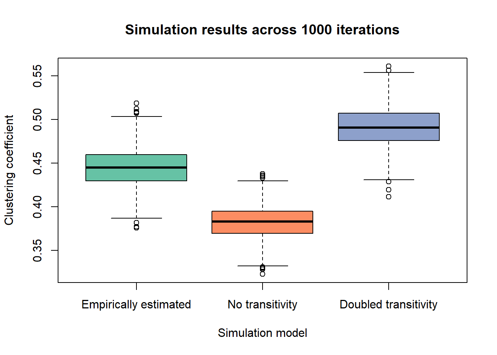

## NULLThis website converted the following original .R scripts into .rmd files.
Please visit GitHub for the latest .R files.
Specific questions with respect to the .rmd files can be addressed to: Jochem Tolsma.
For questions on RSiena please visit the designated GitHub page.
Here, script are shown that can be used to set up an estimated SIENA model as an empirically calibrated agent-based simulation model.
Background reading: Stadtfeld (2018); Snijders & Steglich (2015).
We have tested our effects based on their statistical significance (using t-statistics), which determines whether an effect plays a role in the evolution of networks. We further have constructed measures for the relative importance of effects compared to one another.
A third, an last step, would be to investigate how consequential the studied mechanisms at the micro-level are for certain properties at the macro-level (e.g., clustering, polarization).
To that end, the estimated SIENA model can be utilized as an agent-based simulation model in RSiena.
First, download the data, and put it in the ‘data’ folder. But first make a ‘data’ folder
ifelse(!dir.exists("data"), dir.create("data"), FALSE)
download.file("https://www.stats.ox.ac.uk/~snijders/siena/vdBunt_data.zip",
destfile='./data/vdb.zip')
unzip('./data/vdb.zip', exdir='./data/')continue with loading the data files. And perform some wrangling.
vdb.w0 <- as.matrix(read.table("./data/VRND32T0.DAT"))
vdb.w1 <- as.matrix(read.table("./data/VRND32T1.DAT"))
vdb.w2 <- as.matrix(read.table("./data/VRND32T2.DAT"))
vdb.w3 <- as.matrix(read.table("./data/VRND32T3.DAT"))
vdb.w4 <- as.matrix(read.table("./data/VRND32T4.DAT"))
vdb.w5 <- as.matrix(read.table("./data/VRND32T5.DAT"))
vdb.w6 <- as.matrix(read.table("./data/VRND32T6.DAT"))
vdb.attr <- as.matrix(read.table("./data/VARS.DAT"))
# Take account of missing data codes 6 and 9:
vdb.w0[vdb.w0 %in% c(6,9)] <- NA
vdb.w1[vdb.w1 %in% c(6,9)] <- NA
vdb.w2[vdb.w2 %in% c(6,9)] <- NA
vdb.w3[vdb.w3 %in% c(6,9)] <- NA
vdb.w4[vdb.w4 %in% c(6,9)] <- NA
vdb.w5[vdb.w5 %in% c(6,9)] <- NA
vdb.w6[vdb.w6 %in% c(6,9)] <- NA
# Recode 4 (acquaintance) and 5 (difficult) to no tie
vdb.w0[vdb.w0 %in% c(4,5)] <- 0
vdb.w1[vdb.w1 %in% c(4,5)] <- 0
vdb.w2[vdb.w2 %in% c(4,5)] <- 0
vdb.w3[vdb.w3 %in% c(4,5)] <- 0
vdb.w4[vdb.w4 %in% c(4,5)] <- 0
vdb.w5[vdb.w5 %in% c(4,5)] <- 0
vdb.w6[vdb.w6 %in% c(4,5)] <- 0
# Use the "friendly relation" relation by recoding:
vdb.w0[vdb.w0 %in% c(1,2,3)] <- 1
vdb.w1[vdb.w1 %in% c(1,2,3)] <- 1
vdb.w2[vdb.w2 %in% c(1,2,3)] <- 1
vdb.w3[vdb.w3 %in% c(1,2,3)] <- 1
vdb.w4[vdb.w4 %in% c(1,2,3)] <- 1
vdb.w5[vdb.w5 %in% c(1,2,3)] <- 1
vdb.w6[vdb.w6 %in% c(1,2,3)] <- 1Construct an RSiena data object and algorithm. We take observations 2-3.
library(RSiena)
# Model specification:
friends <- sienaDependent(array(c(vdb.w2,vdb.w3),
dim=c(32, 32, 2)))
sex <- coCovar(vdb.attr[,1])
program <- coCovar(vdb.attr[,2])
smoke <- coCovar(vdb.attr[,3])
(vdb.data <- sienaDataCreate(friends,sex,program,smoke))#> Dependent variables: friends
#> Number of observations: 2
#>
#> Nodeset Actors
#> Number of nodes 32
#>
#> Dependent variable friends
#> Type oneMode
#> Observations 2
#> Nodeset Actors
#> Densities 0.14 0.18
#>
#> Constant covariates: sex, program, smokevdb.algo <- sienaAlgorithmCreate(projname = 'vdb_1234_f', nsub=3, n3=2000, seed=12321)#> If you use this algorithm object, siena07 will create/use an output file vdb_1234_f.txt .We define a simple model.
vdb.eff <- getEffects(vdb.data)
#effectsDocumentation(vdb.eff)
vdb.eff <- includeEffects(vdb.eff,transTrip)#> effectName include fix test initialValue parm
#> 1 transitive triplets TRUE FALSE FALSE 0 0vdb.eff <- includeEffects(vdb.eff,egoX,altX,sameX,interaction1="sex")#> effectName include fix test initialValue parm
#> 1 sex alter TRUE FALSE FALSE 0 0
#> 2 sex ego TRUE FALSE FALSE 0 0
#> 3 same sex TRUE FALSE FALSE 0 0vdb.eff <- includeEffects(vdb.eff,simX,interaction1="program")#> effectName include fix test initialValue parm
#> 1 program similarity TRUE FALSE FALSE 0 0vdb.eff <- includeEffects(vdb.eff,simX,interaction1="smoke")#> effectName include fix test initialValue parm
#> 1 smoke similarity TRUE FALSE FALSE 0 0print(vdb.eff)#> effectName include fix test initialValue parm
#> 1 basic rate parameter friends TRUE FALSE FALSE 5.16295 0
#> 2 outdegree (density) TRUE FALSE FALSE -0.24937 0
#> 3 reciprocity TRUE FALSE FALSE 0.00000 0
#> 4 transitive triplets TRUE FALSE FALSE 0.00000 0
#> 5 sex alter TRUE FALSE FALSE 0.00000 0
#> 6 sex ego TRUE FALSE FALSE 0.00000 0
#> 7 same sex TRUE FALSE FALSE 0.00000 0
#> 8 program similarity TRUE FALSE FALSE 0.00000 0
#> 9 smoke similarity TRUE FALSE FALSE 0.00000 0Estimate the model.
ans <- siena07(vdb.algo,
data=vdb.data,
effects=vdb.eff,
useCluster=TRUE, nbrNodes=10, initC=TRUE,
returnDeps=TRUE)
summary(ans)#> Estimates, standard errors and convergence t-ratios
#>
#> Estimate Standard Convergence
#> Error t-ratio
#>
#> Rate parameters:
#> 0 Rate parameter 3.7598 ( 0.5918 )
#>
#> Other parameters:
#> 1. eval outdegree (density) -1.6124 ( 0.2846 ) -0.0368
#> 2. eval reciprocity 1.2231 ( 0.3462 ) -0.0363
#> 3. eval transitive triplets 0.2214 ( 0.0651 ) -0.0075
#> 4. eval sex alter 0.4804 ( 0.2884 ) 0.0148
#> 5. eval sex ego -0.4062 ( 0.3235 ) 0.0567
#> 6. eval same sex 0.3441 ( 0.2859 ) -0.0676
#> 7. eval program similarity 0.7278 ( 0.3294 ) -0.0436
#> 8. eval smoke similarity 0.2236 ( 0.2458 ) -0.0384
#>
#> Overall maximum convergence ratio: 0.1133
#>
#>
#> Total of 2428 iteration steps.
#>
#> Covariance matrix of estimates (correlations below diagonal)
#>
#> 0.081 -0.015 -0.009 -0.030 -0.020 -0.052 -0.002 -0.002
#> -0.151 0.120 -0.005 0.014 -0.031 -0.009 -0.011 -0.005
#> -0.506 -0.243 0.004 0.000 0.002 0.001 0.002 0.001
#> -0.362 0.137 0.021 0.083 -0.001 0.030 0.009 0.006
#> -0.221 -0.281 0.092 -0.016 0.105 0.027 0.007 -0.002
#> -0.635 -0.090 0.044 0.364 0.287 0.082 -0.007 -0.002
#> -0.023 -0.093 0.110 0.097 0.061 -0.073 0.108 0.004
#> -0.033 -0.060 0.048 0.090 -0.023 -0.034 0.051 0.060
#>
#> Derivative matrix of expected statistics X by parameters:
#>
#> 49.748 25.268 179.920 4.532 4.594 29.340 0.583 3.152
#> 18.073 26.751 84.525 -0.536 2.999 12.212 1.142 1.876
#> 139.607 101.945 856.566 10.222 6.763 82.524 0.558 5.343
#> 3.498 -1.211 2.438 14.620 2.763 -5.096 -1.964 -1.237
#> 3.117 5.183 4.550 2.833 11.533 -2.380 -0.935 0.158
#> 30.817 18.471 123.059 -3.952 -1.586 34.023 2.602 3.315
#> 2.740 3.117 16.943 -2.064 -1.290 4.168 9.223 -0.616
#> 3.147 2.078 8.398 -1.301 -0.330 3.522 -0.496 15.924
#>
#> Covariance matrix of X (correlations below diagonal):
#>
#> 50.737 32.648 214.891 3.629 2.444 32.021 2.575 3.721
#> 0.636 51.989 184.843 -0.688 3.401 23.887 3.488 2.383
#> 0.806 0.685 1402.018 4.400 -3.490 147.764 20.636 9.746
#> 0.136 -0.025 0.031 14.005 3.796 -5.209 -2.239 -0.979
#> 0.101 0.139 -0.028 0.300 11.457 -3.224 -1.529 -0.612
#> 0.751 0.554 0.660 -0.233 -0.159 35.795 4.421 4.086
#> 0.122 0.163 0.186 -0.202 -0.152 0.249 8.795 -0.818
#> 0.135 0.086 0.067 -0.068 -0.047 0.177 -0.071 14.942We now create a new effects object for our simulation model, and we fix the values of our effects for the simulations based on the estimated model.
mysimeff <- getEffects(vdb.data)
#set rate
mysimeff$initialValue[1] <- ans$rate
#network selection effects
mysimeff <- setEffect(mysimeff,recip, initialValue = ans$theta[which(ans$effects$shortName=="recip")], fix = TRUE)#> effectName include fix test initialValue parm
#> 1 reciprocity TRUE TRUE FALSE 1.22307 0mysimeff <- setEffect(mysimeff,transTrip, initialValue = ans$theta[which(ans$effects$shortName=="transTrip")], fix = TRUE)#> effectName include fix test initialValue parm
#> 1 transitive triplets TRUE TRUE FALSE 0.22138 0mysimeff <- setEffect(mysimeff,egoX,interaction1="sex", initialValue = ans$theta[which(ans$effects$shortName=="egoX" & ans$effects$interaction1=="sex")], fix = TRUE)#> effectName include fix test initialValue parm
#> 1 sex ego TRUE TRUE FALSE -0.40619 0mysimeff <- setEffect(mysimeff,altX,interaction1="sex", initialValue = ans$theta[which(ans$effects$shortName=="altX" & ans$effects$interaction1=="sex")], fix = TRUE)#> effectName include fix test initialValue parm
#> 1 sex alter TRUE TRUE FALSE 0.48041 0mysimeff <- setEffect(mysimeff,sameX,interaction1="sex", initialValue = ans$theta[which(ans$effects$shortName=="sameX" & ans$effects$interaction1=="sex")], fix = TRUE)#> effectName include fix test initialValue parm
#> 1 same sex TRUE TRUE FALSE 0.34409 0mysimeff <- setEffect(mysimeff,simX,interaction1="smoke", initialValue = ans$theta[which(ans$effects$shortName=="simX" & ans$effects$interaction1=="smoke")], fix = TRUE)#> effectName include fix test initialValue parm
#> 1 smoke similarity TRUE TRUE FALSE 0.22357 0mysimeff <- setEffect(mysimeff,simX,interaction1="program", initialValue = ans$theta[which(ans$effects$shortName=="simX" & ans$effects$interaction1=="program")], fix = TRUE)#> effectName include fix test initialValue parm
#> 1 program similarity TRUE TRUE FALSE 0.7278 0mysimeff$fix[mysimeff$include==TRUE] <- TRUE
print(mysimeff)#> effectName include fix test initialValue parm
#> 1 basic rate parameter friends TRUE TRUE FALSE 3.75977 0
#> 2 outdegree (density) TRUE TRUE FALSE -0.24937 0
#> 3 reciprocity TRUE TRUE FALSE 1.22307 0
#> 4 transitive triplets TRUE TRUE FALSE 0.22138 0
#> 5 sex alter TRUE TRUE FALSE 0.48041 0
#> 6 sex ego TRUE TRUE FALSE -0.40619 0
#> 7 same sex TRUE TRUE FALSE 0.34409 0
#> 8 program similarity TRUE TRUE FALSE 0.72780 0
#> 9 smoke similarity TRUE TRUE FALSE 0.22357 0Let us now move forward with the creation of two additional models:
one where transitive triplets do not tend to form
(mysimeff.nt), and another where this tendency is doubled
(mysimeff.2xt). Please note that this is merely an example;
in practice, the choice should be based on the research question under
consideration. In this particular case, our objective is to examine the
impact of adjusting the magnitude of transitivity as a micro-level
mechanism on transitivity at the macro-level.
mysimeff.nt <- mysimeff.2xt <- mysimeff
mysimeff.nt <- setEffect(mysimeff.nt, transTrip, initialValue = 0, fix=TRUE)#> effectName include fix test initialValue parm
#> 1 transitive triplets TRUE TRUE FALSE 0 0mysimeff.2xt <- setEffect(mysimeff.2xt, transTrip, initialValue = ans$theta[which(ans$effects$shortName=="transTrip")]*2, fix=TRUE )#> effectName include fix test initialValue parm
#> 1 transitive triplets TRUE TRUE FALSE 0.44277 0print(mysimeff.nt)#> effectName include fix test initialValue parm
#> 1 basic rate parameter friends TRUE TRUE FALSE 3.75977 0
#> 2 outdegree (density) TRUE TRUE FALSE -0.24937 0
#> 3 reciprocity TRUE TRUE FALSE 1.22307 0
#> 4 transitive triplets TRUE TRUE FALSE 0.00000 0
#> 5 sex alter TRUE TRUE FALSE 0.48041 0
#> 6 sex ego TRUE TRUE FALSE -0.40619 0
#> 7 same sex TRUE TRUE FALSE 0.34409 0
#> 8 program similarity TRUE TRUE FALSE 0.72780 0
#> 9 smoke similarity TRUE TRUE FALSE 0.22357 0print(mysimeff.2xt)#> effectName include fix test initialValue parm
#> 1 basic rate parameter friends TRUE TRUE FALSE 3.75977 0
#> 2 outdegree (density) TRUE TRUE FALSE -0.24937 0
#> 3 reciprocity TRUE TRUE FALSE 1.22307 0
#> 4 transitive triplets TRUE TRUE FALSE 0.44277 0
#> 5 sex alter TRUE TRUE FALSE 0.48041 0
#> 6 sex ego TRUE TRUE FALSE -0.40619 0
#> 7 same sex TRUE TRUE FALSE 0.34409 0
#> 8 program similarity TRUE TRUE FALSE 0.72780 0
#> 9 smoke similarity TRUE TRUE FALSE 0.22357 0For each of the three models, we will run 1000 chains of evolving networks. The simulations will start from the friendship networks observed at t_2. We will then extract the (global) transitivity index, calculated as the ratio of transitive triads to potential transitive triads, at the end of each simulation run. Finally, we will plot the results using a boxplot.
# set up the simulation settings
nIter <- 1000 # number of iterations
sim_model <- sienaAlgorithmCreate(
projname = 'simulation',
cond = FALSE,
useStdInits = FALSE, nsub = 0,
n3 = nIter,
seed=242452, # seed for replication
simOnly = TRUE)#> If you use this algorithm object, siena07 will create/use an output file simulation.txt .#simulation using estimated parameters
sim_ans <- siena07(sim_model, # simulation settings
data = vdb.data, # data
effects = mysimeff, # defined effects and set parameters
returnDeps = TRUE, # return simulated networks at the end of period
returnChains = FALSE, # you may also return sequences of micro-steps
batch = TRUE)#>
#> Start phase 0
#> theta: 3.760 -0.249 1.223 0.221 0.480 -0.406 0.344 0.728 0.224
#>
#> Start phase 3
#> Phase 3 Iteration 500 Progress 50%
#> Phase 3 Iteration 1000 Progress 100%#and of alternative models
sim_ans_notrans <- siena07(sim_model, # simulation settings
data = vdb.data, # data
effects = mysimeff.nt, # defined effects and set parameters
returnDeps = TRUE, # return simulated networks at the end of period
returnChains = FALSE, # you may also return sequences of micro-steps
batch = TRUE)#>
#> Start phase 0
#> theta: 3.760 -0.249 1.223 0.000 0.480 -0.406 0.344 0.728 0.224
#>
#> Start phase 3
#> Phase 3 Iteration 500 Progress 50%
#> Phase 3 Iteration 1000 Progress 100%sim_ans_doubletrans <- siena07(sim_model, # simulation settings
data = vdb.data, # data
effects = mysimeff.2xt,# defined effects and set parameters
returnDeps = TRUE, # return simulated networks at the end of period
returnChains = FALSE, # you may also return sequences of micro-steps
batch = TRUE)#>
#> Start phase 0
#> theta: 3.760 -0.249 1.223 0.443 0.480 -0.406 0.344 0.728 0.224
#>
#> Start phase 3
#> Phase 3 Iteration 500 Progress 50%
#> Phase 3 Iteration 1000 Progress 100%# extract the transitivity index from the simulation runs
# make vectors to store them
gti_main <- gti_notrans <- gti_doubletrans <- rep(0,nIter)
library(igraph)
for (i in 1:nIter) {
#?igraph::transitivity
gti_main[i] <- transitivity(graph.data.frame(sim_ans$sims[[i]][[1]]$friends$`1`[,c(1,2)]))
gti_notrans[i] <- transitivity(graph.data.frame(sim_ans_notrans$sims[[i]][[1]]$friends$`1`[,c(1,2)]))
gti_doubletrans[i] <- transitivity(graph.data.frame(sim_ans_doubletrans$sims[[i]][[1]]$friends$`1`[,c(1,2)]))
#str(sim_ans$sims[[1]]) # numbering is as follows: nIter, group number, DV, period number
}
#make data for plotting
plot_data <- rbind(
data.frame(cond="Empirically estimated", clustering_coefficient = gti_main),
data.frame(cond="No transitivity", clustering_coefficient = gti_notrans),
data.frame(cond="Doubled transitivity", clustering_coefficient = gti_doubletrans))
#get colors for boxplot
library(RColorBrewer)
color <- brewer.pal(3, "Set2")
#reorder conditions
plot_data$cond <- factor(plot_data$cond, levels=c("Empirically estimated", "No transitivity", "Doubled transitivity"))
boxplot(clustering_coefficient ~ cond, data = plot_data, main = paste("Simulation results across", nIter, "iterations"),
xlab = "Simulation model", ylab = "Clustering coefficient", col = color)
Copyright © 2020 Jochem Tolsma